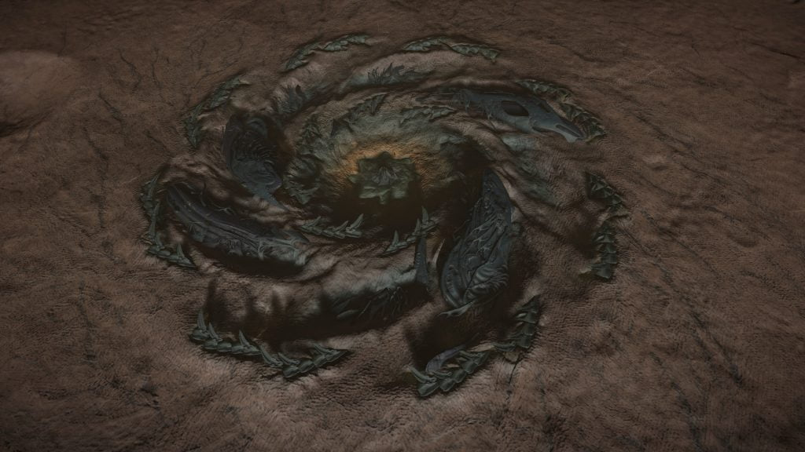

A “Distress Call” signal source may be found in the HIP 14909 system, orbiting body 1.
Note: As of June 3306 the Distress Call no longer exists – there is now a Nav Panel marker called “Anomalous Signal” that only contains a Black Box.
The location of this Distress Call is revealed by the three nearby listening posts:
Merope / Pleiades Sector AB-W b2-4 / HIP 19072
LISTENING POST SIGNAL DATA
…Transmission Detected Gamma Level Encryption VJS-080-A…
Signal Match Detected in Pleiades Sector AB-W B2-4 and HIP 19072 systems.
…Unable to process signal. Signal Match Detected 111.29 lys Language parameters exceeded…
…Signal Blocked at Source…
LISTENING POST SIGNAL DATA
…Transmission Detected Gamma Level Encryption VJS-080-B…
Signal Match Detected in Merope and HIP 19072 systems.
…Unable to process signal. Signal Match Detected 152.29 lys Language parameters exceeded…
…Signal Blocked at Source…
LISTENING POST SIGNAL DATA
… Transmission Detected Gamma Level Encryption VJS-080-C…
Signal Match Detected in Merope and Pleiades Sector AB-W B2-4 systems.
…Unable to process signal. Signal Match Detected 145.90 lys Language parameters exceeded…
…Signal Blocked at Source…
The source of the Distress Call is the wreckage of a Federal Navy Corvette, destroyed by weapons consistent with other Thargoid attacks, leaving green hull scarring and some kind of green gas throughout the area.
An active Thargoid Structure can also be found in this system body 2 a, at -9.7278, 39.0772 (in Live/4.0) or at -26.4558, -27.4746 (in Legacy/3.8). This was the first active site discovered.
